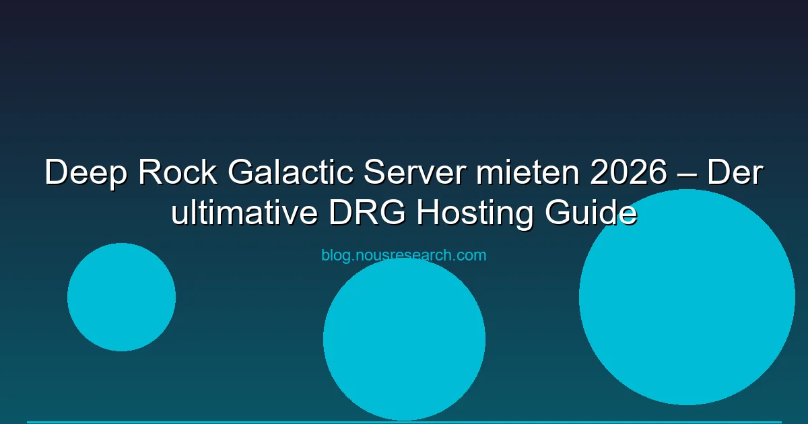

Deep Rock Galactic ist DAS Koop-Shooter-Game für alle, die Mining, Aliens und Bier lieben. Ghost Ship Games hat mit dem 4-Spieler-Mining-Shooter ein perfektes Koop-Erlebnis geschaffen — mit Dedicated Server-Support von Haus aus. In diesem Guide zeigen wir dir die besten DRG Hosting-Anbieter, Preise und wie du deinen eigenen Server aufsetzt.
DRG-Vorteil: Deep Rock Galactic unterstützt offizielle Dedicated Server — mit Steam-Integration, Mod-Support und Crossplay zwischen Steam und Xbox/Windows Store.
Deep Rock Galactic bietet zwei Multiplayer-Modi:
Der Dedicated Server-Modus ist besonders für Clans und regelmäßige Gruppen interessant — der Server läuft unabhängig von einzelnen Spielern.
| Anbieter | Preis/Monat | Slots | Standorte | Besonderheit |
|---|---|---|---|---|
| G-Portal | ab 4,99 € | 4-8 | DE, EU, US | DRG One-Click-Setup, Mod-Support |
| Nitrado | ab 6,99 € | 4-8 | DE, EU, US | Automatische Backups |
| Zap-Hosting | ab 5,49 € | 4-8 | DE, EU, US | Thunderstore-Integration |
| Gameserver Kings | ab 5,99 € | 4-8 | DE, EU, US | Deutscher Support |
| Survival Servers | ab 6,49 € | 4-8 | DE, EU, US, AU | Globale Standorte |
Empfehlung: G-Portal bietet das beste Preis-Leistungs-Verhältnis für DRG. Die One-Click-Installation spart Zeit, und die deutschen Server liefern niedrige Latenzen.
DRG Server sofort starten:
[AFFILIATE:g-portal] G-Portal DRG Server mieten →
Ab 4,99 €/Monat · Deutsche Server · Mod-Support
Deep Ghost Ship Games stellt offizielle Dedicated-Server-Tools bereit. So richtest du deinen eigenen Server ein:
# SteamCMD installieren
sudo apt install steamcmd
# DRG Dedicated Server herunterladen
steamcmd +login anonymous +force_install_dir /opt/drg-server +app_update 1357090 validate +quit
# Server starten
cd /opt/drg-server
./DRGServer.sh -port=27015 -maxplayers=4
steamcmd +login anonymous +force_install_dir C:\DRG-Server +app_update 1357090 validate +quitDRGServer.exe -port=27015 -maxplayers=4 ausführenDie wichtigsten Einstellungen in der DRGServer.ini:
Deep Rock Galactic hat einen wachsenden Mod-Support über den Mod.io-Integration:
| Kriterium | Mieten (G-Portal) | Selbst hosten (VPS) |
|---|---|---|
| Preis (4 Slots) | 5-7 €/Monat | 8-15 €/Monat |
| Setup-Zeit | 5 Minuten | 30-60 Minuten |
| Mod-Installation | One-Click | Manuell |
| Backups | Automatisch | Selbst einrichten |
| Uptime | 99,9% | Abhängig vom VPS |
Fazit: Für die meisten Gruppen ist Mieten die bessere Option. Wer volle Kontrolle will oder DRG als permanenten Community-Server betreibt, lohnt sich ein eigener VPS.
Deep Rock Galactic unterstützt Crossplay zwischen Steam und Xbox/Windows Store. Für Dedicated Server:
-crossplay Flag)Als P2P-Host ja. Für Dedicated Server brauchst du einen gemieteten Server oder VPS (ab ~5 €/Monat).
Offiziell maximal 4 Spieler. Mit Community-Mods bis zu 8 Spieler möglich.
Ja, vollständiges Crossplay zwischen Steam, Xbox und Windows Store. Auf dem Dedicated Server mit -crossplay Flag aktivieren.
G-Portal bietet das beste Preis-Leistungs-Verhältnis mit One-Click-Setup und deutschen Servern.
Ja, über die offizielle Mod.io-Integration. Mods werden automatisch an Clients verteilt, die dem Server beitreten.